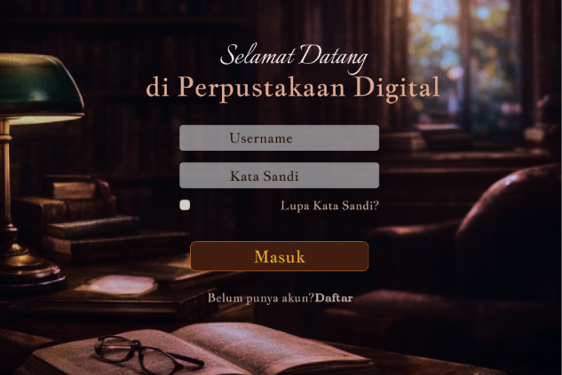
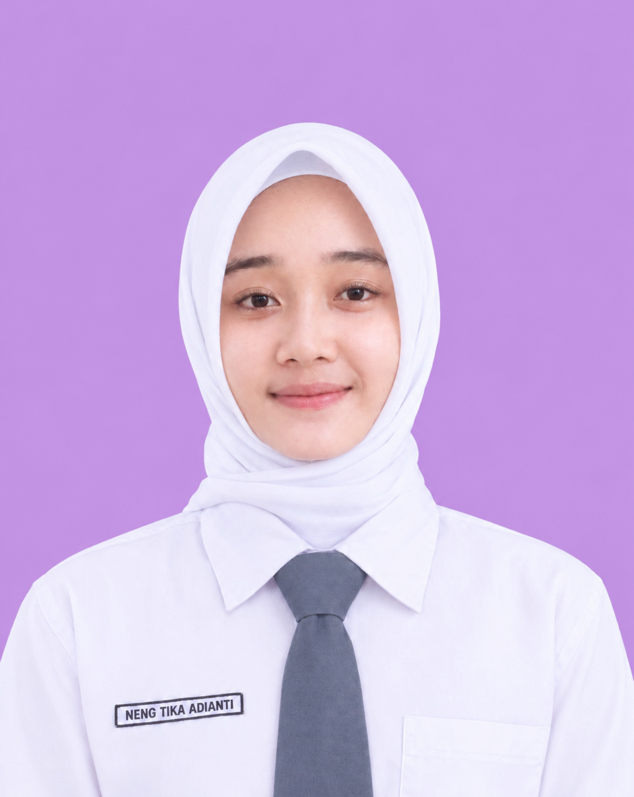
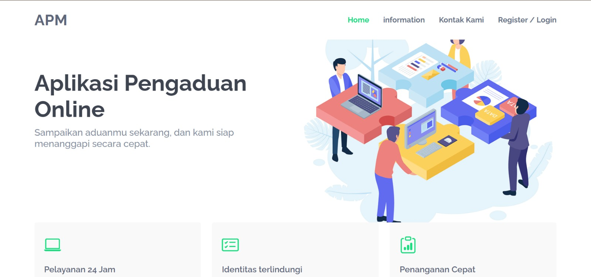
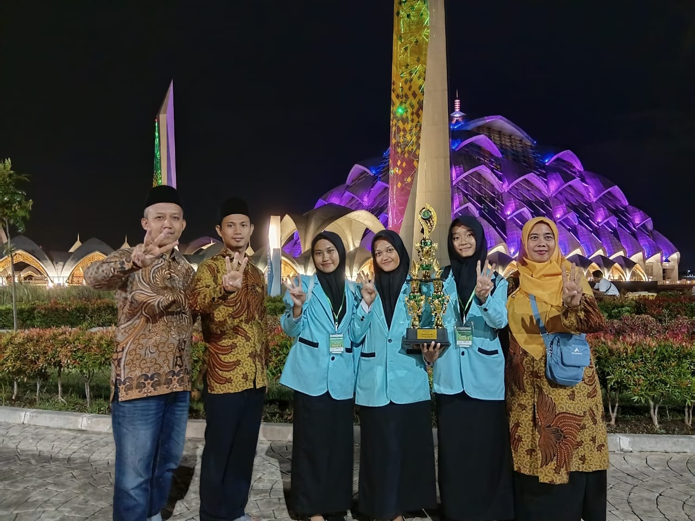
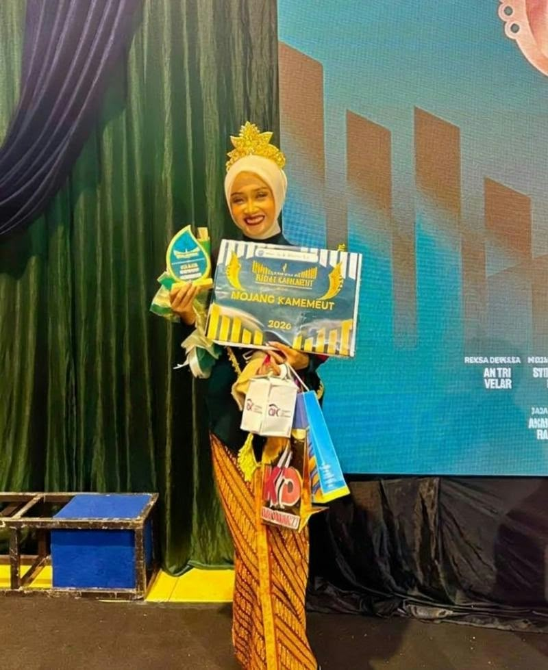
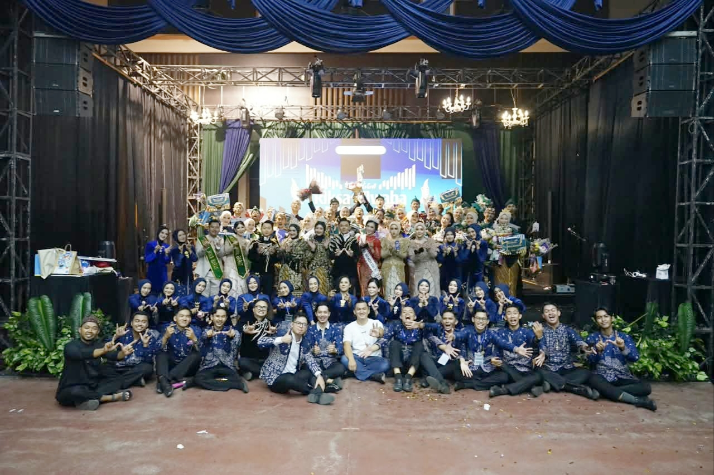
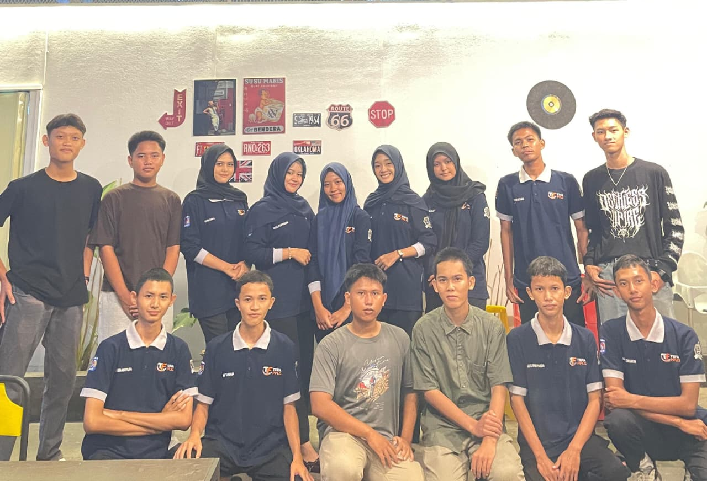

Aplikasi Perpustakaan
Desain antarmuka aplikasi perpustakaan untuk pencarian dan peminjaman buku.
Portfolio 2026 · Ciamis
UI Designer & Web Developer
Membangun antarmuka web yang sederhana, menarik, dan nyaman digunakan.

Sedikit cerita tentang siapa saya, apa yang saya pelajari, dan bagaimana saya bekerja.
Siswi SMKN 3 Banjar, jurusan Rekayasa Perangkat Lunak. Fokus pada web development dan UI design.
Pernah menjadi Ketua Seni Tari SMKN 3 Banjar. Aktif di organisasi, Teaching Factory (TEFA), dan berbagai perlombaan.
Perjalanan pendidikan yang membentuk dasar kemampuan akademik dan teknis saya.
Menempuh pendidikan dasar serta mulai mengenal teknologi dan komputer.
Mengembangkan kemampuan akademik, organisasi, serta aktif mengikuti berbagai kegiatan sekolah.
Jurusan Rekayasa Perangkat Lunak. Fokus pada web development, UI design, dan basis data.
Tools dan teknologi yang saya gunakan untuk merancang serta membangun website.
Delapan alat yang saya pakai sehari-hari untuk merancang dan membangun web.
Kumpulan project desain dan pengembangan yang saya kerjakan.
Empat karya yang saya rancang dan bangun dengan perhatian pada setiap detail kecil.

Desain antarmuka aplikasi perpustakaan untuk pencarian dan peminjaman buku.

Antarmuka platform magang yang membantu mahasiswa menemukan dan mengajukan peluang.

Aplikasi web pengaduan masyarakat dengan login dan pengelolaan data.

Panduan penggunaan sistem ERP untuk membantu petugas bekerja lebih cepat dan rapi.
Penghargaan dan pencapaian yang menjadi bagian dari perjalanan saya.

Tingkat Provinsi Jawa Barat.

Pasanggiri Mojang Jajaka Kota Banjar 2026.
Tempat saya belajar tumbuh di luar kelas — dari budaya, komunikasi, sampai kerja sama tim.
Ruang tumbuh di luar kelas yang ikut membentuk cara saya bekerja.

Mojang Kameumeut 2026
Terpilih sebagai Mojang Kameumeut pada Pasanggiri Mojang Jajaka Kota Banjar 2026. Aktif melestarikan budaya Sunda, melatih public speaking, kepercayaan diri, serta kemampuan berkomunikasi di depan publik.

Active Member · SMKN 3 Banjar
Aktif mengikuti kegiatan organisasi sekolah serta Teaching Factory (TEFA) untuk meningkatkan komunikasi, kepemimpinan, kerja sama tim, serta penyelesaian project secara kolaboratif.
Terbuka untuk kolaborasi project, magang, maupun sekadar berdiskusi tentang web dan desain. Pilih kanal yang paling nyaman untuk menghubungi saya.